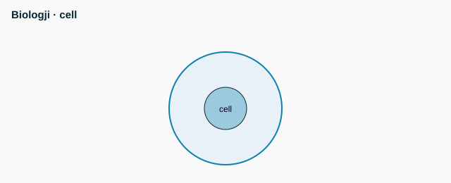

Biology - senior - M2 - Population and ecosystem ecology


- 10% rule: about 10% of energy passes to the next trophic level
- Logistic growth: limited by carrying capacity (K)
- Exponential growth: without limits
- Hardy-Weinberg: p^2 + 2pq + q^2 = 1
- Example: q^2 = 0.04 -> q = 0.2, p = 0.8, 2pq = 0.32